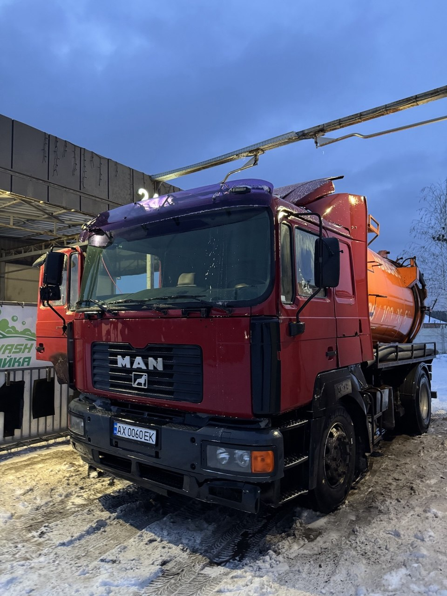
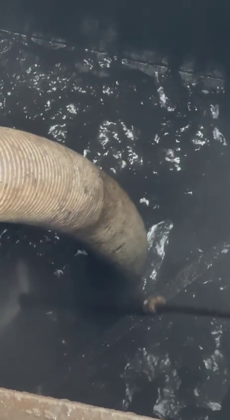

Асенізаторські послуги у Харкові та області
Оперативне викачування вигрібних ям, септиків, відстійників та усунення забруднень. Професійна спецтехніка (цистерни від 5 до 16 м³), рукави до 60 м, швидкий виїзд бригади.
Швидка заявка
Залиште номер — передзвонимо за 5 хвилин і розрахуємо вартість.
Наші послуги
Повний спектр асенізаторських робіт та обслуговування інженерних мереж для об'єктів будь-якої складності.
Про компанію ХРКВВ
Команда ХРКВВ спеціалізується на професійному вивезенні рідких відходів та обслуговуванні каналізаційних систем у Харкові та всій області. Ми працюємо як з приватними домогосподарствами, так і з великими комерційними підприємствами, автомийками, ресторанами та ОСББ.
Завдяки власній сучасній спецтехніці місткістю від 5 до 16 куб.м та напірно-всмоктувальним рукавам довжиною до 60 метрів ми виконуємо роботи швидко, акуратно та без неприємних запахів на території.
Зв'язатися з нами
Основні напрямки обслуговування
Оберіть необхідну послугу для отримання детальної інформації про регламент проведення робіт.
Відкачка та вивезення нечистот
Швидке спорожнення вигрібних ям, септиків та вуличних туалетів потужними насосами.
Мулосос та очищення мулу
Промивання резервуарів, видалення щільних мулових відкладень та злежів у колодязях.
Механічна прочистка каналізації
Ефективне усунення складних засмічень у внутрішніх та зовнішніх трубах професійними спіралями.
Гідродинамічна прочистка каналізації
Промивання трубопроводів струменем води під високим тиском для повного видалення жиру та нальоту.
Переваги компанії ХРКВВ
Ми гарантуємо європейський сервіс, оперативність та суворе дотримання екологічних норм.
🚀 Швидкий виїзд
Бригада виїжджає відразу після підтвердження заявки. Працюємо без запізнень у зручний для вас час.
🚛 Власна спецтехніка
Сучасні вакуумні машини та мулососи об'ємом від 5 до 16 куб.м в ідеальному технічному стані.
📋 Офіційний договір з юрособами
Надаємо повний пакет бухгалтерських документів, працюємо за безготівковим розрахунком та за зручним графіком.
💰 Прозорі ціни
Жодних прихованих платежів чи доплат на місці. Ціна фіксується під час узгодження замовлення.
📅 Без вихідних
Приймаємо дзвінки та виїжджаємо на виклики щодня з 07:30 до 19:00.
♻️ Легальна утилізація
Вивіз відходів здійснюється суворо на спеціалізовані очисні споруди згідно з екологічними нормативами.
Як ми працюємо у 4 кроки
Дзвінок або заявка
Ви залишаєте заявку на сайті або телефонуєте нашому диспетчеру.
Уточнення деталей
Оцінюємо обсяг, відстань до об'єкта та узгоджуємо точну вартість.
Виїзд бригади
Спецтехніка прибуває на об'єкт у чітко призначений час.
Виконання та оплата
Проводимо роботи та приймаєте результат (готівковий або безготівковий розрахунок).
Галерея виконання замовлень
Приклади виїздів нашої техніки на об'єкти у Харкові та області.
Натисніть для перегляду
Натисніть для перегляду

Натисніть для перегляду
Що кажуть наші клієнти
Часті питання
Потрібно терміново викачати яму чи прочистити каналізацію?
Залиште контакти або зателефонуйте нам прямо зараз. Диспетчер на зв'язку!